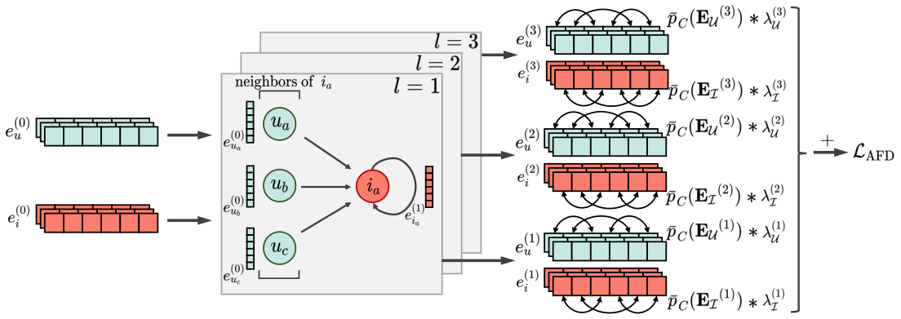

AFDGCF: Adaptive Feature De-correlation Graph Collaborative Filtering for Recommendations (自适应特征去相关的图协同过滤推荐)
- 会议/期刊: SIGIR 2024
- 作者与机构: Wei Wu, Chao Wang, Dazhong Shen, Chuan Qin, Liyi Chen, Hui Xiong（USTC / 港科大(广州) / 上海AI Lab / BOSS直聘）
- 推荐链路定位: 召回（GNN 协同过滤表征学习）
- 研究方向: 图神经网络与知识图谱推荐 / 协同过滤
- 论文原文: 论文原文链接
- 开源代码: 开源代码仓库链接
TL;DR (1分钟核心速览)
GNN-CF 层数一深性能就掉，学界惯常归咎于“过平滑”，本文指出另一条被忽视的病根——特征过相关（表征矩阵列方向维度高度线性相关），并从理论上证明行/列相关范数严格成正比。据此提出模型无关的 AFDGCF：对每层用户/物品表征加权施加列相关惩罚 \(\bar{p}_C\)，权重按各层相关度自适应反比分配，深层惩罚轻以保住平滑性。在 4 个数据集、4 个骨干上用全库排序评测，Yelp 上 GCCF/HMLET 的 Recall@10 分别提升 12.31%/12.03%，LightGCN 提升 9.92%。
Background & Motivation (背景与核心矛盾)
- 主流范式: LightGCN/GCCF/NGCF/HMLET 等通过堆叠多层二部图消息传递捕获高阶协同信号，再池化得到用户/物品表征。
- 前人局限: ①层数超过 2–3 层后性能反降，已有工作（IMP-GCN、UltraGCN、对比学习/蒸馏方案）几乎只处理“过平滑”，默认表征质量只由节点间相似度决定；②DGCF 虽用了解耦约束，但仅在意图子空间内约束，子空间内各特征列仍高度相关，且细粒度解耦会掉点。
- 核心洞察 (Key Insight): 作者用 Corr（列间平均 |Pearson|）与 SMV（行间平均归一化欧氏距离）在 Movielens 上量化发现：随层数增加 Corr 单调上升、SMV 单调下降，而 NDCG@20 在 2–3 层后下滑——过相关与过平滑是同源双生，只治其一会留下另一半损失。
- 本文切入点: 给出二者范数意义下的严格比例关系，把“治过相关”作为同时缓解两个问题的一根杠杆，用逐层自适应惩罚实现。
Method (核心方法设计)
1. 整体框架 (Overall Architecture)
AFDGCF 是一个外挂式正则框架，不改变任何骨干的传播算子。输入用户-物品二部图，骨干（LightGCN 等）做 \(L\)层传播，每层输出用户矩阵\(\mathbf{E}^{(l)}_{\mathcal{U}}\)与物品矩阵\(\mathbf{E}^{(l)}_{\mathcal{I}}\)。与传统做法只在最终池化表征\(\mathbf{E}\)上加约束不同，框架在每一层、并对用户与物品分开计算列相关惩罚\(\bar{p}_C\)，再按各层相关度反比分配权重\(\lambda^{(l)}\)，与原始 BPR/CE 损失加权求和后联合反传。推理阶段惩罚项被丢弃，打分仍为\(\hat{y}_{ui}=\mathbf{e}_u^\top\mathbf{e}_i\)，零额外在线开销。
flowchart TD
A["用户-物品二部图 A"] --> B["骨干 L 层传播<br/>LightGCN / GCCF / NGCF / HMLET"]
B --> C["逐层表征 E_U^(l), E_I^(l)"]
C --> D["列相关矩阵 P_C 与惩罚 p̄_C"]
D --> E["自适应权重 λ^(l) ∝ 1/p̄_C^(l)"]
C --> F["BPR / CE 主损失"]
E --> G["L = L_CF + α·L_AFD"]
F --> G
2. 关键设计拆解 (Key Designs)
- 过相关—过平滑的比例定理（理论支点）：以往只把过平滑当作行方向问题。作者在表征矩阵双重标准化（行列均值为 0、方差为 1）下定义列相关阵 \(\mathbf{P}_C=\frac{1}{m}\mathbf{E}^\top\mathbf{E}\)、行相关阵\(\mathbf{P}_R=\frac{1}{n}\mathbf{E}\mathbf{E}^\top\)，借助 SVD\(\mathbf{E}=\mathbf{U}\boldsymbol{\Sigma}\mathbf{V}^\top\)及\(\mathrm{tr}((\mathbf{E}^\top\mathbf{E})^2)=\mathrm{tr}((\mathbf{E}\mathbf{E}^\top)^2)\) 推得
即列相关与行相关按 \(\sqrt{c}\) 同比例缩放。物理直觉：压制列冗余会自动抬高节点间区分度，一举两得，无需再单独设计去平滑模块。
- 列相关惩罚 \(\bar{p}_C\)（惩罚什么）：把每个特征维视为随机变量，作者比较了 KL 散度、欧氏/余弦距离与相关系数，指出标准化后三者等价而相关系数计算最省。故目标为使\(\mathbf{P}_C\) 逼近单位阵：
- 层级自适应权重（在哪里惩罚）：固定 \(1/L\)或\(1/l\) 惩罚会误伤深层表征——深层本就靠平滑性贡献协同信号（LightGCN 有效性来源）。作者反向缩放：
相关度越高的层被压得越轻（保平滑），总惩罚预算守恒；且因惩罚落在每层而非池化后表征，\(\alpha\)在不同骨干间可迁移（同一数据集最优\(\alpha\) 基本一致）。
- 训练目标与开销：\(\mathcal{L}_{CF}\)为 BPR（或 CE），负采样沿用骨干原有策略（BPR 单负样本），\(\alpha\in\{10^{-5},\dots,10^{-2}\}\)。每 epoch 额外复杂度\(\mathcal{O}((p+q)d^2)\)，实测每 epoch 慢 5%–15%（MovieLens 4.51s→5.12s），但收敛 epoch 减半（LightGCN 309→114）；大规模场景建议按 batch 采样子集估计\(\mathbf{P}_C\)。
Experimental Setup & Evaluation Protocol (实验设置与评估协议)
- 数据集与预处理（Yelp/Amazon-book 过滤 <15 次交互，Gowalla <10 次，Movielens 未过滤）：
| 数据集 | #Users | #Items | #Interactions | 密度 | 场景 |
|---|---|---|---|---|---|
| Movielens | 6,040 | 3,629 | 836,478 | 3.8e-2 | 电影（稠密） |
| Yelp | 26,752 | 19,857 | 1,001,901 | 1.8e-3 | 本地生活 |
| Gowalla | 29,859 | 40,989 | 1,027,464 | 8.4e-4 | LBS 签到 |
| Amazon-book | 58,145 | 58,052 | 2,517,437 | 7.5e-4 | 图书（最稀疏） |
- 数据划分与防穿越: 随机 8:1:1 比例划分 train/valid/test，valid 上以 NDCG@10 早停（未采用时间戳切分，属潜在穿越风险）。
- 排名评测协议: Full-Ranking（all-ranking 全库未交互物品排序），规避负采样偏差；指标 Recall@10 / NDCG@10 / MAP@10。
- 对比基线与超参: BPRMF、DMF、ENMF（非图）；MultiVAE、RecVAE（VAE）；DGCF、NGCF、GCCF、LightGCN、HMLET（图）。统一 \(d=128\)、3 层传播、Adam、lr=1e-3、batch=4096、Xavier 初始化，RecBole 实现；配对 t 检验\(p<0.05\)。
Key Experimental Results (实验关键数据)
1. 主实验对比 (Main Results)
| Method | ML R@10 | ML N@10 | Yelp R@10 | Yelp N@10 | Gowalla R@10 | Gowalla N@10 | Amazon R@10 | Amazon N@10 |
|---|---|---|---|---|---|---|---|---|
| BPRMF | 0.1697 | 0.2353 | 0.0643 | 0.0437 | 0.1110 | 0.0790 | 0.0678 | 0.0470 |
| ENMF | 0.1941 | 0.2613 | 0.0742 | 0.0520 | 0.1271 | 0.0914 | 0.0839 | 0.0617 |
| RecVAE | 0.1852 | 0.2524 | 0.0777 | 0.0536 | 0.1466 | 0.1046 | 0.1044 | 0.0772 |
| DGCF | 0.1819 | 0.2477 | 0.0712 | 0.0487 | 0.1372 | 0.0974 | 0.0951 | 0.0689 |
| NGCF | 0.1743 | 0.2404 | 0.0613 | 0.0419 | 0.1129 | 0.0800 | 0.0695 | 0.0484 |
| GCCF | 0.1761 | 0.2460 | 0.0658 | 0.0451 | 0.1268 | 0.0907 | 0.0898 | 0.0639 |
| LightGCN | 0.1886 | 0.2540 | 0.0756 | 0.0525 | 0.1433 | 0.1019 | 0.1015 | 0.0744 |
| HMLET | 0.1799 | 0.2479 | 0.0723 | 0.0503 | 0.1427 | 0.1028 | 0.0967 | 0.0699 |
| AFD-LightGCN | 0.1985 | 0.2689 | 0.0831 | 0.0575 | 0.1564 | 0.1117 | 0.1078 | 0.0781 |
| Improv. | +5.25% | +5.87% | +9.92% | +9.52% | +9.14% | +9.62% | +6.21% | +4.97% |
四个骨干实例化后全部正向：NGCF 提升 1.20%–9.21%、GCCF 4.31%–14.98%、HMLET 5.12%–12.03%、LightGCN 4.52%–10.85%，且 AFD-LightGCN 全面超越 VAE 类与非图基线。
2. 消融实验 (Ablation Study)
对比“自适应权重 vs 固定 \(1/l\)权重”(\(\text{AFD-f}\))：
| 数据集 | 指标 | AFD-N | AFD-f-N | AFD-G | AFD-f-G | AFD-H | AFD-f-H | AFD-L | AFD-f-L |
|---|---|---|---|---|---|---|---|---|---|
| Yelp | Recall | 0.0636 | 0.0623 | 0.0739 | 0.0719 | 0.0810 | 0.0796 | 0.0831 | 0.0808 |
| Yelp | NDCG | 0.0432 | 0.0424 | 0.0506 | 0.0487 | 0.0562 | 0.0552 | 0.0575 | 0.0558 |
| Gowalla | Recall | 0.1233 | 0.1198 | 0.1315 | 0.1298 | 0.1541 | 0.1465 | 0.1564 | 0.1505 |
| Gowalla | NDCG | 0.0869 | 0.0850 | 0.0949 | 0.0937 | 0.1101 | 0.1069 | 0.1117 | 0.1081 |
3. 关键实验发现 (Key Findings)
- 自适应权重是真实增益源：8 组对比中固定权重全部落后，Gowalla 上 AFD-HMLET 的 Recall 比固定版高 0.0076（+5.2%），证明“深层少惩罚”不是可有可无的调参技巧，而是保平滑的必要设计。
- 越稀疏、越深层收益越大：稠密 Movielens 仅 +5.25%，而稀疏 Yelp 上 GCCF/HMLET 达 +12.31%/+12.03%；图 5 显示 1→5 层时 AFD 增益单调扩大，与“过相关随层数累积”的诊断自洽。
- 双问题同时被压制：施加 AFD 后所有层 Corr 显著下降、SMV 上升，说明列约束确实反传成行方向区分度，验证定理 1。此外收敛更快——LightGCN 在 Amazon-book 上最优 epoch 从 742 降至 360（约减半），侧面说明过相关导致正负样本可分性变差、拖慢训练。
Highlights & Limitations (亮点、对比与审稿批判)
- 与代表作对比: ①相对 LightGCN/GCCF/UltraGCN 等“改传播算子”路线，本文不动结构只加正则，可即插即用；②相对 DGCF 的意图解耦，本文约束的是全局特征列而非意图子空间，避免了 DGCF 在大稀疏数据上的过拟合掉点；③相对对比学习（SGL/SimGCL）靠数据增广造视图，本文用矩阵谱性质给出确定性惩罚，无采样随机性。
- 可迁移亮点: \(\bar{p}_C=\frac{1}{\sqrt{2}}\|\mathbf{P}_C-\mathbf{I}_d\|_F\) 这一“表征列解耦”正则可直接移植到序列推荐的双塔输出、多模态融合表征、LLM 语义 embedding 上抑制维度坍缩；反比分层权重思路也适用于任意深层网络的层级正则。
- 审稿级局限批判: ①随机 8:1:1 划分而非全局时间戳切分，存在未来信息泄漏，且未报告时间切分下结论是否成立；②每 epoch 慢 5%–15%、需在大矩阵上算 \(\mathbf{P}_C\)，论文只给“可采样”口头建议而无近似误差分析或大规模工业验证；③\(\alpha\)虽跨骨干一致但跨数据集漂移，且\(\alpha\ge5\times10^{-2}\) 时训练直接崩溃，鲁棒区间窄；④理论证明依赖“双重标准化”强假设，真实表征未必满足。
Rating (四维评分)
- 方法创新性 (Novelty): ⭐⭐⭐⭐ （首次在 RS 中系统提出特征过相关，并用 SVD 给出列/行相关范数成比例的严格定理，把两个老问题统一为一个杠杆）
- 评估协议与实验扎实度 (Protocol & Experiments): ⭐⭐⭐⭐ （4 数据集 × 4 骨干 × 全库排序 + 配对 t 检验 + 效率/层数/超参/案例四组分析完整，但随机划分与缺失时间切分是硬伤）
- 写作与数学规范度 (Clarity & Rigor): ⭐⭐⭐⭐ （双重标准化假设交代清楚、定理证明简洁，Corr/SMV 指标定义可复现；自适应权重的最优性仅经验验证、未给收敛性分析）
- 工业落地与复现价值 (Industrial & Practical Value): ⭐⭐⭐⭐ （代码开源、模型无关、推理零开销且训练 epoch 减半，工程量主要在损失端；但 \(\mathbf{P}_C\)的\(\mathcal{O}((p+q)d^2)\) 在亿级用户下需采样近似）